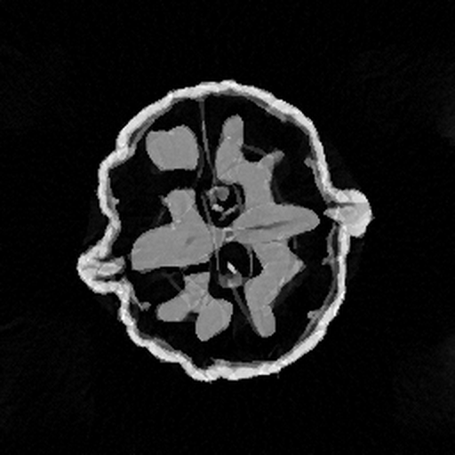
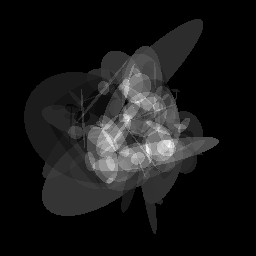
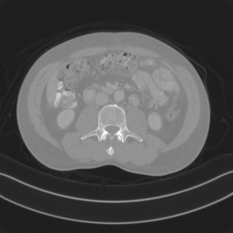
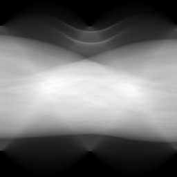
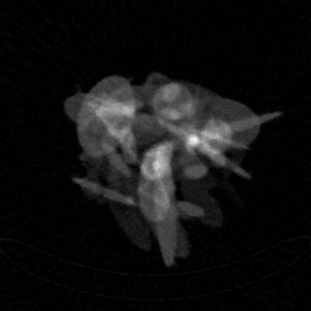
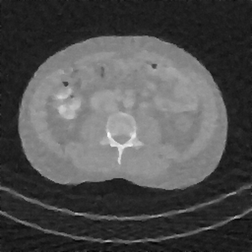

SCD 的 CT 部分复现了一半
官方代码按论文协议调参后，四个可复现设置里两个与论文一致；论文主打的“椭圆先验重建腹部 CT”没有复现，SCD 反而比 DDS 低 0.9 dB。
- 个设置复现
- 2
- 个方向相反
- 1
- 个没复现
- 1
- 个表 Ⅰ 设置缺代码或数据
- 3

用   
训练域之外会发生什么
扩散模型做 CT、MRI 重建时，先验来自训练集。测试图像一旦来自别的分布，条件采样（DPS、DDS）仍能让结果大体符合测量，但测量约束不到的部分，模型会用训练集里的形状去填。论文把这叫作“只在训练集中存在的特征”。
已有的补救办法要么需要目标域的干净图像来微调，要么需要大量不同协议的测量来从头训练。SCD 的定位是：只用当前这一次测量 y，在重建的同时把模型调过去。
- 单次测量、自监督。适配目标是让模型的去噪估计经过数据一致性之后，与测量吻合：最小化 ‖A·x̂′₀ − y‖²。
- LoRA 残差通路。每个卷积层加一条低秩分支，只训练约 0.5–2.5% 的参数；初始为零，关掉就回到原模型。
- 噪声项仍用原网络。DDIM 更新里的确定性噪声由未适配的网络给出，避免它作为多噪声级去噪器“变味”。
- 可选 TV 正则、可跳步适配。每隔 k 步才适配一次，k 越大越接近 DDS。

自跑结果。用腹部 CT（AAPM）训练的模型重建椭圆体模：DDS 在底部画出了 AAPM 训练图里扫描床的弧线，SCD 把它去掉了。这正是论文说的“训练集特有特征”。
一步采样里发生什么
SCD 建在 DDS 之上。每一个采样步都按下面五个阶段走一遍，前三步是 DDS 本来就有的，第四步是 SCD 新加的。点一个阶段展开它，每段先给比方，再给准确说法。
比方：一个只见过训练集的画家，学会了把满屏雪花一点点擦成一张图。
准确说：网络 ε(x_t, t; θ*) 预测每个噪声级别下的噪声，它学到的“图像该长什么样”就是先验。
比方：擦到一半，让画家先说出最终的图大概是什么样。
准确说：Tweedie 估计给出当前对干净图的最佳猜测。
x̂₀ = (x_t − √(1−ᾱ_t)·ε) / √ᾱ_t
比方：在碗里找碗底，共轭梯度每一步换一个不破坏前面进展的方向，几步就到底。
准确说：求一张既靠近 x̂₀、又满足 A·x ≈ y 的图。只在图像上修正，不对网络求导，DDS 单张约 6 秒。
(I + γAᵀA)·x = x̂₀ + γAᵀy
比方：不重新培训画家，只在他手边贴几张便利贴；画出来对不上影子，就改便利贴。
准确说：每层加低秩分支 W + α·BCᵀ，每步用 Adam 更新 K 次，目标是 ‖A·x̂′₀(Δθ) − y‖²（可加 TV）。换一张图就重置。
比方：拿着改好的答案，往下走一级台阶。
准确说：DDIM 更新用适配后网络得到的 x̂′₀，噪声项仍用原网络的 ε。SCD 单张约 48 秒，是 DDS 的 8 倍。
x_{t−1} = √ᾱ_{t−1}·x̂′₀ + 噪声项 + 随机项
从雪花到核桃
两边是同一次测量、同一个椭圆先验，从同一片噪声出发；每一帧是该步网络给出的去噪估计 x̂₀。DDS 每步只做数据一致性校正，SCD 每隔 5 步还把模型微调 18 次。
自跑。官方采样器原样运行，只包装模型调用来记录中间结果；参数为 README 示例与代码默认值。
论文声称的增益，SCD 相对 DDS
| 训练域 → 测试域 | RED-diff | DDS | SCD | SCD − DDS | 本次能否复现 |
|---|---|---|---|---|---|
| AAPM → AAPM | 38.37 | 39.55 | 39.73 | +0.18 | 能 |
| AAPM → LoDoPaB | 31.09 | 31.20 | 34.21 | +3.01 | 缺数据接口 |
| AAPM → Ellipses | 32.67 | 33.11 | 35.41 | +2.30 | 能 |
| Ellipses → Ellipses | 35.51 | 36.91 | 36.02 | −0.89 | 能 |
| Ellipses → AAPM | 29.75 | 30.82 | 33.98 | +3.16 | 能 |
| Ellipses → LoDoPaB | 31.25 | 31.80 | 33.42 | +1.62 | 缺数据接口 |
| BrainWeb → AAPM | 32.24 | 29.83 | 34.58 | +4.75 | 缺模型和数据 |
| MRI 大脑 → 膝（表 Ⅱ） | 28.92 | 29.47 | 30.31 | +0.84 | 没有 MRI 代码 |
| 核桃 µCT，真实测量（图 3） | 24.17 | 24.00 | 26.68 | +2.68 | 只能仿真测量 |
MRI 一行取自表 Ⅱ，那张表另有 DDNM 一列（26.98）；核桃一行取自图 3，另有 DPS 22.07、DIP+TV 26.67（按最佳早停，偏乐观）。论文称超参在 10 张验证图上按 PSNR 调出，但表 Ⅰ 各任务的具体超参没有公开。
复现是怎么做的
只调用官方脚本，不改一行代码；按论文的协议，先在 10 张验证图上调参，再在测试集上评估。
用到的东西
6 项代码与论文的出入
6 处四个设置的测试结果
选一个设置，拖动中间的分割线，左边是 DDS，右边是 SCD。每个设置显示的那张测试图，是增益最接近全集平均的一张。
复现了，幅度略小
AAPM 先验重建椭圆体模。DDS 把训练集里扫描床的弧线画了进来，SCD 去掉了它；100 张测试图里 SCD 全部更好。
测试集 100 张 · 配对差 ±0.03（标准误）· SCD 更好 100/100
| 训练域 → 测试域 | 自跑 DDS | 自跑 SCD | 配对差 SCD − DDS | SCD 更好 | 论文 DDS | 论文 SCD | 判断 |
|---|---|---|---|---|---|---|---|
| AAPM → AAPM（56 张） | 39.81 / 0.951 | 39.73 / 0.951 | −0.09 ± 0.04 | 14 / 56 | 39.55 / 0.951 | 39.73 / 0.952 | 复现 |
| AAPM → Ellipses（100 张） | 32.46 / 0.808 | 34.31 / 0.919 | +1.85 ± 0.03 | 100 / 100 | 33.11 / 0.787 | 35.41 / 0.954 | 复现 |
| Ellipses → Ellipses（100 张） | 35.32 / 0.952 | 36.37 / 0.962 | +1.05 ± 0.02 | 100 / 100 | 36.91 / 0.972 | 36.02 / 0.968 | 方向相反 |
| Ellipses → AAPM（56 张） | 31.30 / 0.814 | 30.39 / 0.778 | −0.90 ± 0.13 | 5 / 56 | 30.82 / 0.847 | 33.98 / 0.883 | 未复现 |
“±”为配对差的标准误。随机种子由脚本固定，每个设置跑一次。用 README 和代码默认参数时，四个设置的 SCD 只有 29.21–33.78 dB，比论文低 3–7 dB；上表是按论文协议调参之后的结果。
增益对照
每组两根条：上面是自跑的 SCD − DDS，下面是论文的。两个 AAPM 先验的设置与论文同向；椭圆先验的两个设置都和论文不一致，其中 Ellipses → AAPM 差了 4 dB。
核桃：排序一致
用 README 里的原命令跑核桃，SCD > DDS > DPS，和论文图 3 一样；DPS 满是重叠的椭圆，DDS 中央还残留椭圆边缘，SCD 最干净。SCD 比 DDS 高 1.42 dB，论文是 2.68 dB。
绝对数值不可比：代码用仿真测量，论文用真实扫描数据。SCD 在这张图上随机性很大：同样的设置共跑了三次（官方脚本一次，录制采样过程两次），得到 28.23、27.16、22.35 dB；DDS 两次都是 26.80。
调参前后差在哪
直接用 README 和代码默认值，所有设置都比论文低 3–7 dB（测试集 DDS 25.67–32.40，SCD 29.21–33.78）。下面是调参时找到的关键因素。
代码默认 0.2。AAPM → AAPM 验证集上，DDS 从 32.19 升到 39.68 dB，与论文 39.55 对上。
torch 版 Radon 没有归一化，γ·AᵀA 远大于单位阵，γ 取 1、10、100 结果一样。
椭圆相关设置最优为 7–10 步，AAPM → AAPM 只要 2 步；再多反而变差。
README 的 alphatv=1e-3 下，TV 项 2.70，数据项的噪声底线只有 0.25；梯度范数差 11–45 倍。
SCD 三个设置最优是 lr 3e-4、每 5 步适配 18 次；AAPM → AAPM 是 1e-4。
每 5 步 18 次与每步 4 次（接近论文）在验证集上最多差 0.13 dB。
主打例子为何没复现
椭圆先验重建 AAPM 腹部 CT：论文 +3.16 dB，自跑 −0.90 dB。逐项排查如下。

结果到底差多少？
测试集 56 张：DDS 31.30 dB，SCD 30.39 dB，配对差 −0.90 ± 0.13，只有 5 张 SCD 更好。论文是 DDS 30.82、SCD 33.98。DDS 这一侧和论文只差 0.5 dB，问题出在 SCD 的增益上。
是 TV 正则太强吗？
README 设置下 TV 项确实压过数据项：t=500 时 TV 约 2.6、数据项约 0.48。但把 alphatv 降到 1e-5 或 1e-6，验证集只有 30.74–30.81 dB，仍低于 DDS 的 31.22。TV 不是主因。
是适配根本没起作用吗？
不是。用官方模块测 LoRA 梯度：t=900 时数据项梯度最大值 3.9；Adam 走一步，x̂₀ 平均改变 3.5×10⁻²，与 TV 项同一量级。适配在动，只是没有往好的方向动。
换学习率和调度呢？
验证集上一共试了 12 组：学习率 1e-4、3e-4、1e-3，调度“每 5 步 18 次”和“每步 4 次”，TV 三档。最好 31.03 dB，没有一组超过 DDS。
图像上看是什么样？
调好参数的 DDS 已经看不到明显的椭圆伪影；SCD 没有被过度平滑，但软组织纹理更噪，底部边缘出现少量条纹。左侧是测试集里增益最接近平均的一张。
可能的原因是什么？
以下都是推断，没有验证：
- 论文用 ODL 算子，代码改成了未归一化的 torch Radon；
- 论文 SCD 用 50 步，代码写死 100 步；
- 表 Ⅰ 各任务的超参没有公开；
- 论文数字可能来自更早的代码版本。
接下来可以怎么做？
最直接的是向作者要表 Ⅰ 的超参和当时的代码版本。也可以自己把步数和算子改回论文的设定再试，但那就不再是“原样复现”，要单独标注。